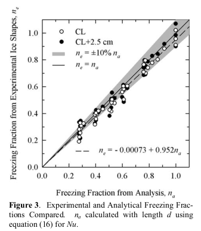

"The collection of ice by the cylinders is similar to the collection of ice by airplane components"

Figure 1. Modes of energy transfer for an unheated airfoil in icing conditions.
Conclusions of the Icing Thermodynamics Thread
Summary
Data from the post-NACA era are used to resolve open questions
Key points
- The Icing Thermodynamics thread is summarized.
- Post-NACA era data is used to resolve some open questions.
- The "Messinger model" and extended Messinger models are prevalent in current icing analysis.
Discussion
Review of the Icing Thermodynamics thread so far
In the Icing Thermodynamics thread, we saw:
- Calculations of wet surface temperatures NACA-ARR-5G13
- Two dimensional heated surface equations for ice protection NACA-TR-8311
- Comparisons of natural icing flight data to 2D ice protection calculations NACA-TN-1472
- The "Ludlam limit" for freezing all water impinging Ludlam, F. H.: The Heat Economy of a Rimed Cylinder
- The term "freezing fraction" defined Messinger, B. L.: Equilibrium Temperature of an Unheated Icing Surface as a Function of Airspeed
- Graphical solutions of ice protection equations Simple Graphical Solution of Heat Transfer and Evaporation from Surface Heated to Prevent Icing
- The unit gc and the archaic unit "slug" explained "A Brief Digression on Unit Systems"
- The warmest ambient temperature at which ice can accumulate NACA-TN-2861, and NACA-TN-2914
- Evidence for "Ludlam limits" for icing instruments Fraser, D.: Thermodynamic Limitations of Ice Accretion Instruments
- Less that 1% of water drops evaporate approaching an obstacle NACA-TN-3024
- Detailed analysis of the ratio of heat transfer to mass transfer NACA-TN-3045
- Measurements of sublimation rates at Mach 1.3 NACA-TN-3104
- Measurements and analysis of the "Ludlam limit" for rotating cylinders NACA-TR-1215
- Experimental verification of the warmest temperature at which ice can accumulate NACA-TN-3396
- A distillation of the NACA-era thermodynamics to one control volume ADS-4
And programs in the Python programming language are available to reproduce the results in several cases 2.
- naca_arr_5g13.py
- naca_tn_1472.py
- ludlam.py
- messinger.py
- naca_tn_2799.py
- naca_tn_2914.py
- fraser.py
- naca_tr_1215_find_critical_line.py
- ads4_freezing_fraction.py
Readers may also be interested in the prior Icing on Cylinders thread
Open questions
We will look at some data from the post-NACA era to help resolve these questions.
- Do calculated freezing fractions correspond to observed values?
- Are the water drop evaporation estimates in NACA-TN-3024 accurate?
Freezing fractions
Rotating cylinders
We saw in NACA-TR-1215 good correspondence between flight test ice mass and calculated ice mass.
It appears that there were two essential elements of an analysis to well match the flight test rotating cylinder freezing rate values:
1. Evaporation and convection occur on the entire surface of the cylinder.
2. A roughness-enhanced heat transfer relationship (nu = 0.024 * re^0.747)
However, in Fraser, D.: Thermodynamic Limitations of Ice Accretion Instruments, the correspondence was not as good for icing tunnel test data. This is an area for further investigation.
Use of LEWICE for rotating cylnders
While LEWICE is a well validate tool for airfoils, as noted in "NACA Publications on Aircraft Icing Cylinders", the use of LEWICE for rotating cylinders is not recommended.
The results below are probably using LEWICE for a case that it was not intended for. I present results anyway to illustrate the the differences.
The NACA-TR-1215 flight cases were run with LEWICE. LEWICE was run in two modes. One mode started at the clean cylinder diameter, and used the automatic time step method determine the number of ice shape iterations. This resulted in 6 to 19 steps, depending on the condition and cylinder size. The other mode started at the reported average ice cylinder diameter, and used a single, 1 second long time step to calculate an ice growth rate for the cylindrical surface.
LEWICE results had fair to poor agreement for the rotating cylinder flight test data.


[Figure 24d is not compared, as the actual flight LWC value is unknown, because all of the cylinders of the multicylinder instrument had unknown degree of limited freezing.]
Non-rotating cylinders
The theoretical value "freezing fraction" does have some correspondence to measured test values.
I use the term "correspondence" because while quantitative comparisons can be made, there are assumptions in both the test values and the analysis values.
Freezing fraction is difficult to measure experimentally.
To illustrate, an experimental measurement of "freezing fraction"
is typically made by running an icing case in an icing wind tunnel,
measuring the leading edge ice thickness,
and calculating an apparent stagnation line ice mass growth rate based on an assumed ice density.
This is compared to a calculated ice mass growth rate base on all the ice freezing where it impinges,
which is dependent on the accuracy of the impingement efficiency calculation
and the measured tunnel airspeed, liquid water content,
and the measured or assumed drop size distribution.
We have seen analytical ice mass rate calculations several times, including Messinger 1. However, the calculated values are dependent again on the measured tunnel airspeed, liquid water content, and drop size distribution, and an assumed tunnel test section humidity of 100%, as well as the calculated impingement efficiency and heat transfer coefficients, which we have seen can vary on the order of +/-25% in NACA-TN-1472 3. And the analytical values usually are determined for the initial condition of the surface without ice, and do not account for changes in the surface as ice accumulates.
Even with the factors noted above, many cases compare surprisingly (to me, at least) well.
There are several sources of ice measurements on non-rotating cylinders.


The ice thickness at the leading edge was measured from the figures. From that, an ice growth rate can be calculated:
measured_ice_growth_rate = ice_thick / time
A rime ice grow rate can be calculated:
calculated_rime_ice_growth_rate = lwc/G_PER_KG * beta * u / ice_density
The ice density is assumed to be the bulk ice density, 917 kg/m^3. A Langmuir "D" drop size distribution was assumed to calculate the beta value.
And an apparent freezing fraction value can be calculated:
n_apparent = measured_ice_growth_rate / calculated_rime_ice_growth_rate
The heat transfer relationship from NASA-TM-107141 was used:
nu = 1.244 * re^0.4774
The file "messinger.py" was used to calculate the freezing fraction. The freezing fraction is evaluated at the initial cylinder diameter (only). The is no attempt to calculate changes during the ice growth, when the surface shape becomes non-cylindrical and the heat transfer and water catch rate may change.
For the AEDC Table 1, the reported and calculated freezing fraction values agree well, but the apparent freezing fraction values have scatter compared to the calculated values.

For NASA-TM-107141, apparent freezing fraction values agree well with the calculated values, but the reported values do not. As the heat transfer relationship used came from NASA-TM-107141, it is not clear what the implementation differences of the calculation would be.

For NASA-CR-2008-215302, the values agree fairly well.

LEWICE analysis of non-rotating cylinders
For non-rotating cylinders, the results with LEWICE are mixed.
Unlike rotating cylinders, LEWICE was apparently intended to be used for non-rotating cylinders, as there is a cylinder example in the LEWICE manual.
One case had good agreement at the stagnation line, but varying agreement elsewhere:

Another case did not agree well at the stagnation line, with varying agreement elsewhere.

Unfortunately, the mass values were not recorded in NASA-TM-107141, so we cannot compare the calculated masses to the observed masses.
Industrious readers are encouraged to run more comparisons, but these two examples are typical in my experience.
I speculate that analysis methods other than LEWICE will also be challenged for cylinder cases like these. Cylinders have complex aerodynamics, with many cases of interest having separated flow. As we saw in the Icing on Cylinders thread, the water impingement values can be accurately calculated with potential flow, which does not include separation, but other flow features, such as surface pressure coefficient and heat transfer coefficients, may be more sensitive.
Airfoil leading edge approximated as a cylinder
This treats the airfoil leading edge as a cylinder with a diameter equal to twice the leading edge radius of curvature.
The freezing fraction values agree well at higher values, but at lower values the scatter is greater than the +/-10% region shown.

I view this as validation of Uwe von Glahn's assertion that "The collection of ice by the cylinders is similar to the collection of ice by airplane components" 4 from 1955, but it took 50 years to get the measured data.
"Ludam Limits"
Related to the freezing fraction calculation is the "Ludlam Limit", the maximum water catch rate where all available water is frozen. It is often expressed as a "critical" LWC value.
However, as we saw in the reviews of Ludlam and NACA-TR-1215, there are several different "Ludlam Limit" methods that yield different values.
The values are so disparate that the term Ludlam limit has almost lost meaning.


If you need to calculate if all available water is freezing on a surface, be sure that you have validation data for the method applicable to your environment (natural icing, icing wind tunnel) and configuration (rotating cylinder, cylinder, airfoil, other), or you may well find large differences between test and analysis values.
Also note that for natural icing conditions, NACA-TR-1215 presents a critical value, that can be predicted, and run-off values, that can only be determined post-test by comparing the various multicylinder values.
Water drop evaporation
I will defer the evaluation of this to a future post in the "Water Drop Evaporation thread".
We will put together several pieces from the NACA-era to implement this,
similar to NACA-TN-3024,
but without the equilibrium assumption.
We require post-NACA era data to validate the model.
Once we have a water drop motion simulation,
we can can get the differential airspeed values
needed to calculate the water drop heat and mass transfer.
For now, I will say that NACA-TN-3024 is correct in the conclusion that less than 1% of the water mass evaporates, but the details of how one gets there are different.
Conclusions
Influential authors
There was a notable shift in influence from the NACA-era to the post-NACA era.
J. K. Hardy's publications were highly influential in the NACA-era. He either authored or is cited by 10 of the 14 publications in the Thermodynamics thread. However, Hardy is not often cited in recent publications. Not being included from the references of ADS-4 (where Hardy's datum temperature was described but not credited) may have had an influence on that.
The validation of Hardy's equations to the limits of the test methods available at the time in NACA-TN-3024 (runback ice testing is challenging, especially at Mach 1.35) is a "lost gem" (rarely cited) and a crowning achievement of the NACA-era, in my view.
Messinger's publication 1 is highly influential in the post-NACA era, and is still cited frequently in recent literature, but was cited only once in the NACA publications. Messinger cited three of Hardy's publications and acknowledged Hardy's contributions in the text. Perhaps we may view Hardy as still having influence, but one layer down in the citations.
One thing that is common to the NACA-era and the post-NACA era is the influence of Langmuir and Blodgett 5. Six of the 14 publications in the Thermodynamics thread cite Langmuir and Blodgett. Recent publications frequently cite Langmuir and Blodgett.
Data still used today
Messinger's model and "extended" Messinger models are used extensively today for icing analysis. The recent publications citing Messinger are too numerous to list here, see an automatically updated listing at scholar.google.com (115 results since 2021, sampled on May 15, 2022, it may well grow by the time this post is published). The original publication lacked features such as surface pressure variations that some extended models add.
Note that there are many details in implementing the Messinger model, and different implementations may yield different results (see the discussion of NASA-TM-107141 above).
The single control volume anti-ice calculation method from ADS-4 is still in use today, or at least it has not been deprecated in later design guides such as 6 and 7. However, the wide availability of LEWICE and other 2D and 3D ice protection design tools has largely displaced its use.
Related
The next thread in the NACA review series is the Ice Shapes Thread.
Notes:
-
Messinger, B. L.: Equilibrium Temperature of an Unheated Icing Surface as a Function of Airspeed. Preprint No. 342, Presented at I.A.S. Meeting, June 27-28, 1951. ↩↩
-
Neel, Carr B., Jr., Bergrun, Norman R., Jukoff, David, and Schlaff, Bernard A.: The Calculation of the Heat Required for Wing Thermal Ice Prevention in Specified Icing Conditions. NACA-TN-1472, 1947. ↩
-
von Glahn, Uwe H.: The Icing Problem, presented at Ottawa AGARD Conference. AG 19/P9, June 10-17 1955, reprinted in Selected Bibliography of NACA-NASA Aircraft Icing Publications, NASA-TM-81651, August, 1981 I could not locate this on the NTRS. It is available at (https://core.ac.uk/reader/42858720) (circa November, 2021) ↩
-
Langmuir, Irving, and Blodgett, Katherine B.: "Mathematical Investigation of Water Droplet Trajectories". Report. No. RL-224, January 1945, in "The Collected Works of Irving Langmuir", Vol. 10, 1961. ↩
-
“Ice, Frost, and Rain Protection”, SAE Aerospace Applied Thermodynamics Manual, 1969 (regularly updated) ↩
-
“Aircraft Icing Handbook, Volume I.” DOT/FAA/CT-88/8-1 (1991) https://apps.dtic.mil/sti/pdfs/ADA238039.pdf .
Also note that there was a perhaps little known update in 1993: https://apps.dtic.mil/sti/pdfs/ADA276499.pdf ↩